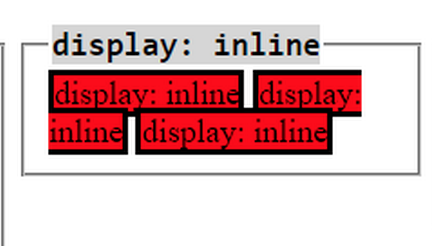
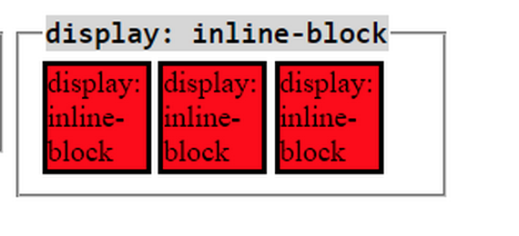

HTML & CSS Design
Inline vs. Inline Blocks
June 17, 2015
The purpose of this blog is to teach the use and differences between inline and inline block. CSS is a very powerful tool used for designing and beautifying HTML text. With different elements on a page, both inline and inline-block are commands that help organize the basic structure of a page.
Inline is used to display each element in a horizontal line, as follows:

As demonstrated above, the inline command takes each element and places them in horizontal accordance with one another. We call on this format using the following syntax:
tag {
display:inline;
}
Inline-block is very similar to inline, however it blocks off each separate element as it's own entity, instead of letting it all mush into one giant block. An example of what this looks like:

We call on this format using the following syntax:
tag {
display:inline-block;
}
Hopefully this gives a clear understanding of the difference between CSS's Inline and Inline-block commands, and how to use them.